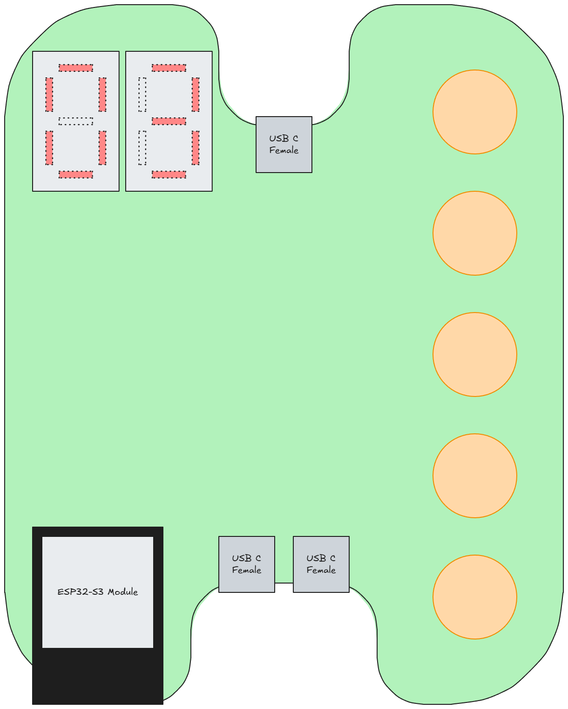

PCB outline planning

I thought about how to arrange primary components on the FC/CC PCB. I "indented" the USB-C connector ports such that USB-C cable plug (rigid part of it) will stay within PCB bounding box. This should help protect the ports and cable from mechanical strain. I had an idea that the majority of PCB components can be placed on the back side of the PCB, while easy-to-solder I/O components can be positioned on the front side of the PCB. This way, the overall outline and size of the PCB can be reduced while still providing a neat and logical arrangement for I/O.